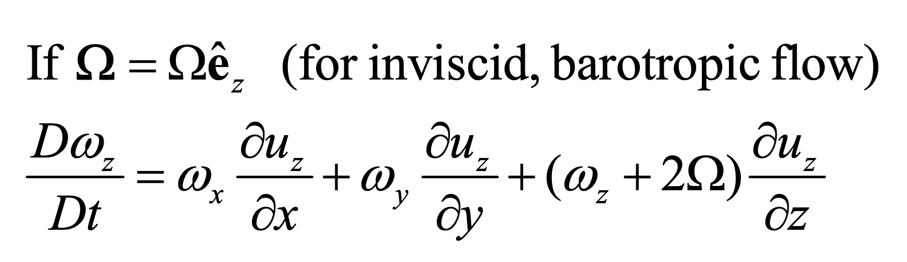

<!DOCTYPE html>
<html lang="ko" data-theme="light">
<head>
  <meta charset="utf-8">
  <meta name="viewport" content="width=device-width, initial-scale=1">
  <title>Ch3 Vorticity dynamics_part4_Non inertial rotating frame | Sehyeog Kim</title>
  <link rel="stylesheet" href="../../../../assets/css/style.css">
  <script>!function(){var t=localStorage.getItem("theme")||"light";document.documentElement.setAttribute("data-theme",t)}();</script>
</head>
<body>
  <button class="theme-toggle" aria-label="Toggle theme"><svg class="icon-sun" viewBox="0 0 24 24" fill="none" stroke="currentColor" stroke-width="2" stroke-linecap="round" stroke-linejoin="round"><circle cx="12" cy="12" r="5"/><line x1="12" y1="1" x2="12" y2="3"/><line x1="12" y1="21" x2="12" y2="23"/><line x1="4.22" y1="4.22" x2="5.64" y2="5.64"/><line x1="18.36" y1="18.36" x2="19.78" y2="19.78"/><line x1="1" y1="12" x2="3" y2="12"/><line x1="21" y1="12" x2="23" y2="12"/><line x1="4.22" y1="19.78" x2="5.64" y2="18.36"/><line x1="18.36" y1="5.64" x2="19.78" y2="4.22"/></svg><svg class="icon-moon" viewBox="0 0 24 24" fill="none" stroke="currentColor" stroke-width="2" stroke-linecap="round" stroke-linejoin="round"><path d="M21 12.79A9 9 0 1 1 11.21 3 7 7 0 0 0 21 12.79z"/></svg></button>

  <header class="mobile-header">
    <span class="site-title">Sehyeog Kim</span>
    <button class="menu-toggle" aria-label="Menu">&#9776;</button>
  </header>
  <div class="sidebar-overlay"></div>

  <div class="site-wrapper">
    <aside class="sidebar">
      <div class="sidebar-bg">
        
      </div>
      <div class="sidebar-profile">
        
        <h1 class="profile-name">Sehyeog Kim</h1>
        <p class="profile-bio">AI &amp; Computational Engineering<br>Personal Blog</p>
        <div class="profile-links">
          <a href="https://github.com/Sehyeogkim" target="_blank" rel="noopener">
            <svg viewBox="0 0 16 16" width="15" height="15" fill="currentColor"><path d="M8 0C3.58 0 0 3.58 0 8c0 3.54 2.29 6.53 5.47 7.59.4.07.55-.17.55-.38 0-.19-.01-.82-.01-1.49-2.01.37-2.53-.49-2.69-.94-.09-.23-.48-.94-.82-1.13-.28-.15-.68-.52-.01-.53.63-.01 1.08.58 1.23.82.72 1.21 1.87.87 2.33.66.07-.52.28-.87.51-1.07-1.78-.2-3.64-.89-3.64-3.95 0-.87.31-1.59.82-2.15-.08-.2-.36-1.02.08-2.12 0 0 .67-.21 2.2.82.64-.18 1.32-.27 2-.27.68 0 1.36.09 2 .27 1.53-1.04 2.2-.82 2.2-.82.44 1.1.16 1.92.08 2.12.51.56.82 1.27.82 2.15 0 3.07-1.87 3.75-3.65 3.95.29.25.54.73.54 1.48 0 1.07-.01 1.93-.01 2.2 0 .21.15.46.55.38A8.013 8.013 0 0016 8c0-4.42-3.58-8-8-8z"/></svg> GitHub
          </a>
        </div>
      </div>
      <nav class="sidebar-nav">
        <a href="/" class="nav-item nav-home">Home</a>
        <span class="nav-group-label">AI</span>
        <a href="/blog/ai/agentic-ai-theory/" class="nav-item">Agentic_AI_Theory<span class="nav-post-count">8</span></a>
        <a href="/blog/ai/deep-learning/" class="nav-item">Deep-learning<span class="nav-post-count">14</span></a>
        <a href="/blog/ai/machine-learning/" class="nav-item">Machine_Learning<span class="nav-post-count">11</span></a>
        <a href="/blog/ai/sensitivity-analysis/" class="nav-item">Sensitivity_Analysis<span class="nav-post-count">3</span></a>
        <span class="nav-group-label">BioMechanics</span>
        <a href="/blog/biomechanics/blood-flow-and-metabolism/" class="nav-item">Blood-Flow-and-Metabolism<span class="nav-post-count">12</span></a>
        <a href="/blog/biomechanics/cardiovascular-diseases/" class="nav-item">CardioVascular_Diseases<span class="nav-post-count">8</span></a>
        <span class="nav-group-label">Mechanical_Engineering</span>
        <a href="/blog/mechanical-engineering/computational-linear-algebra/" class="nav-item">Computational-Linear-Algebra<span class="nav-post-count">15</span></a>
        <a href="/blog/mechanical-engineering/computational-fluid-dynamics/" class="nav-item">Computational_Fluid_Dynamics<span class="nav-post-count">14</span></a>
        <a href="/blog/mechanical-engineering/continuum-mechanics/" class="nav-item">Continuum-Mechanics<span class="nav-post-count">9</span></a>
        <a href="/blog/mechanical-engineering/engineering-mathematics/" class="nav-item">Engineering_Mathematics<span class="nav-post-count">14</span></a>
        <a href="/blog/mechanical-engineering/finite-element-method/" class="nav-item">Finite-Element-Method<span class="nav-post-count">1</span></a>
        <a href="/blog/mechanical-engineering/fluid-mechanics/" class="nav-item">Fluid_Mechanics<span class="nav-post-count">18</span></a>
        <a href="/blog/mechanical-engineering/gas-dynamics/" class="nav-item">Gas_Dynamics<span class="nav-post-count">24</span></a>
        <a href="/blog/mechanical-engineering/heat-transfer/" class="nav-item">Heat-transfer<span class="nav-post-count">8</span></a>
        <a href="/blog/mechanical-engineering/solid-mechanics/" class="nav-item">Solid_Mechanics<span class="nav-post-count">25</span></a>
        <a href="/blog/mechanical-engineering/thermodynamics/" class="nav-item">Thermodynamics<span class="nav-post-count">14</span></a>
        <a href="/blog/mechanical-engineering/viscous-flow/" class="nav-item active">Viscous_Flow<span class="nav-post-count">28</span></a>
      </nav>
    </aside>

    <main class="main-content">
      <div class="breadcrumb"><a href="/">Home</a><span class="sep">/</span><a href="/blog/mechanical-engineering/">Mechanical_Engineering</a><span class="sep">/</span><a href="/blog/mechanical-engineering/viscous-flow/">Viscous_Flow</a><span class="sep">/</span><span>Ch3 Vorticity dynamics_part4_Non inertial rotating frame</span></div>
<a href="/blog/mechanical-engineering/viscous-flow/" class="back-link">&larr; Back to Viscous_Flow</a>
<div class="page-header"><h1>Ch3 Vorticity dynamics_part4_Non inertial rotating frame</h1></div>
<div class="post-meta"><span class="meta-item"><span class="meta-label">Date:</span> 2024-10-10</span><span class="meta-item"><span class="meta-label">Category:</span> Viscous_Flow</span><span class="meta-item"><span class="meta-label">Source:</span> <a href="https://jeffdissel.tistory.com/m/116" target="_blank" rel="noopener">link</a></span></div>
<article class="post-content"><p>Ch3 Vorticity dynamics_part4_Non inertial rotating frame<br />
바로 이전 포스터에서,<br />
우리는 비관성 좌표계에서 Navier's Stokes Eq을 유도하였다.<br />
<br />
햇갈리기 때문에, parameter들의 정의를 다시 한번 살피고 가자.<br />
u': 물체의 속도 (비관성좌표계에서 관찰한)<br />
U: 비관성좌표계 자체의 속도 (관성좌표계에서 관찰한)<br />
Ω: 비관성좌표계의 각속도 (관성좌표계에서 관찰한)<br />
x': 물체의 위치벡터 (비관성좌표계에서 관찰한)<br />
여기서, 우리는 일정한 속도로 회전하고 고정된 non inertial reference frame을 살펴볼 것이다.<br />
따라서, 정리하면 식2가 도출된다.<br />
<br />
복잡한 계산을 편하게 해주는 것이 바로 Tensor notation<br />
(익숙해지면, 정말편하지만 어려워서 아직 익숙하지 않다..)<br />
(아예 모르시다면, 밑의 포스터를 무조건 보고 오셔야 됩니다)<br />
https://jeffdissel.tistory.com/105<br />
Ch1. Kinematics<br />
시작에 앞서서,Cartesian Tensor에 대해서익숙해지고 들어가자. 유체의 움직임에 관한 식을유도하는 과정에서가장 중요한 도구인Cartesian Tensor. 기본적으로,i,j,k 인덱스를 사용한다.규칙: 인덱스<br />
jeffdissel.tistory.com<br />
다시 본론으로,<br />
비관성좌표계에서 나비아스 스톡스 방정식을 Tensor notation으로 표현해주면<br />
<br />
Tensor notation<br />
Levi-Cevita Tensor<br />
를 사용하여, (eijk)<br />
각 항들을 다음과 같이 분해하자.<br />
<br />
그대로 대입해주고, 정리해주면 식4가 도출된다.<br />
<br />
여기서, 각항들을 새로운 Levi-Cevita Tensor<br />
index (nqi) 이후 d/dx_q를 취해주면, 좌변 두번째 항 = 0 이된다.<br />
<br />
두번째항은 Scalar의 Divergence이었고, A로 표현하면 다음과 같다.<br />
<br />
0인지 확인을 위해 직접 전개를 해보니,<br />
Levi-Cevita Tensor의 특징으로 0이 도출된다.<br />
<br />
가만히 보니까 어디서 많이 본 듯한 비주얼이다.<br />
우리가 계산한 것이 바로. curl(divergence of A)<br />
였던 것이다.<br />
<br />
발산항의 curl은 항상 0 인 것은 자명하기 때문에<br />
0이었던 것이다.<br />
다시 본론으로 돌아와서,<br />
2nd 항이 0 이었던 것을 확인했고<br />
나머지 항들을 다시 써보자<br />
<br />
먼저 1번 항을 전개해보자.<br />
<br />
nqi ,ijk를 몇개 전개해보니 규칙이 발견되었다.<br />
위 규칙을 Kronecker Delta 로 다음과 같이 표현이 가능하다.<br />
<br />
따라서, 1번을 정리하면<br />
<br />
<br />
<br />
<br />
두번째항은 전개하면 똑같이, Curl(divergence of scala P) = 0이므로<br />
다음과 같이 정리가 된다.<br />
<br />
3번째 항도 1번째 항에서 사용한 규칙으로<br />
Kronecker Delta를 활용하여 전개하면<br />
<br />
마지막으로 4번 항은 아주 심플하게 curl u 즉, vorticity이다.<br />
<br />
방금 유도한 1,2,3,4 항들을 전부 대입해주면<br />
<br />
우변 두번째 항을 좌변으로 넘겨주어 total time derivative of Vorticity (W)<br />
로 표현해주면 다음과 같이 식이 나온다.<br />
<br />
결론적으로 우리가 유도한 식은<br />
Vorticity Equation인데, 회전하고있는 비관성 좌표계에서 바라본 Vorticity Eq이다.<br />
우리가 이전에 구한 관성좌표계에서 유도한 Vorticity 방정식과 비교해보면<br />
<br />
w -&gt; (w+2 Ω) 임을 알 수 있고,<br />
따라서, (w+2<br />
Ω): Absolute vorticity in an inerital frame.<br />
이라고 부른다.<br />
우리가 구한 비관성좌표계의 vorticity식에서<br />
inviscid, barotropic flow 가정으로 우변의 두항을 날려주고<br />
각속도는 z방향만 있다고 했을때 식을 전개하면 다음과 같다.<br />
<br />
위 식이 의미하는 것은, vorticity = 0 즉, irrotational flow이어도<br />
비관성좌표계 자체가 회전하면, vorticity 가 변해서 rotational로<br />
변한다는 것이다.</p></article>
      <footer class="site-footer">
        <p>&copy; 2026 Sehyeog Kim</p>
      </footer>
    </main>
  </div>
  <script src="../../../../assets/js/main.js"></script>
</body>
</html>